作者视角的世界引擎：静态稿与原型评审板
w00039 t16。开发者 2026-11-02 要求：在开始存储与 Spec 之前，先用自己给的故事种子做一个具体的静态例子，从作者的视角看最终效果，借此找出现有设计（已接受的提案 docs/proposals/world-engine-kernel.md）的不足。
每张图的外框都是真实组件：外壳网格、标题栏、活动栏、编辑器标签条、状态栏、右栏的 Agent 对话视图。中间的条目树、条目页、回执、待处理、变更详情、建议、改动记录、剧情表是一次性的草稿，不是产品代码。图是静态的，悬停、弹出、拖动这些交互没有画出来。画布 1440×900，亮色。
样本：故事种子、“再加一个面板”和第一章大纲都是开发者 2026-11-01 给的原文。第 1 章正文按大纲写；第 2 章“用钱说话”是主会话续写的示意，里面故意留了两处要记账发现的问题：余额 19,800 和估计的蛋糕价钱对不上；“淡金色的长发”和开局设定的“银白长发”不同。
界面上不出现记录 id、Component、字段路径（提案第 8 节“入口与用词”），所以草稿里把提案的几个词换成了作者的说法：初值 → 开局，讲述 → 讲到的地方，补丁 → 改了什么，生效位置 → 什么时候。
这一轮改了什么 说明
开发者 11-02 定了：第 2 轮的四条按推荐；数值追踪做“精确”和“语义”两档，不做“大概”；改设定以后找旧写法，怀疑程序按旧词搜的效果。原型照这些改了（类型 r3/model.ts，走完一周的世界 r3/world.json）：
- 修订只存变了的字段。新建的存整份，修改只存变了的那几个字段的改前改后。走完一周，修订从 48 KB 降到 35 KB，而且这 35 KB 里已经包括新存进去的“带来的变化”。
- “带来的变化”在发布时存进修订。回执和保存后的提示都读它，不再靠重放历史。
- 精确与语义两档。字段声明自己是哪一档，作者可以换。精确档照旧由程序加减、和正文写明的数核对。语义档的值与事件都是文字：正文写明的数是新的起点；之后的事只记一句“发生了什么”；现在的样子由小模型从起点开始归纳，按输入缓存（缓存键是起点加之后事件的文字），输入一样就不再调模型。原型里小模型用查表代替。
- 找旧写法改成两步。记账时，把正文里重述设定的句子链到那个字段上（“这句写的就是原身外观”）；改设定以后，这些句子直接就是候选，不靠按旧词搜。其余的（换了说法的、还没记账的章、细纲、别的条目）交给 Agent 自己找、自己判断。
p12 语义档：存款不记确切的数
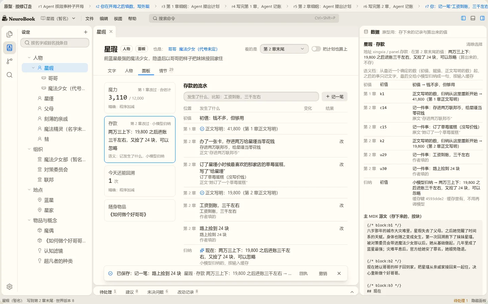
p13 语义档：星瑾对哥哥的态度
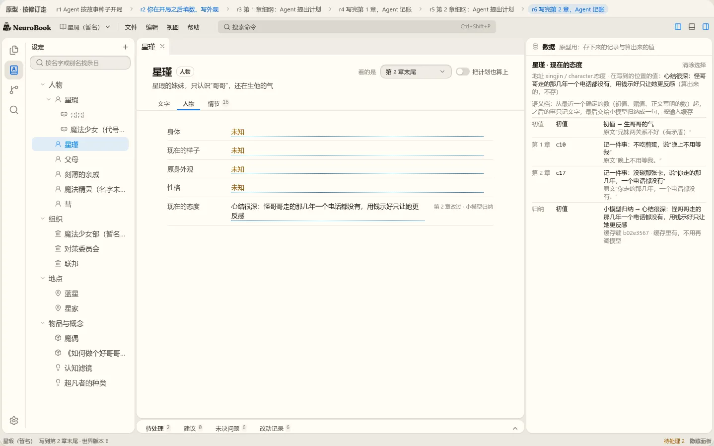
p08 改设定以后的建议（新做法）
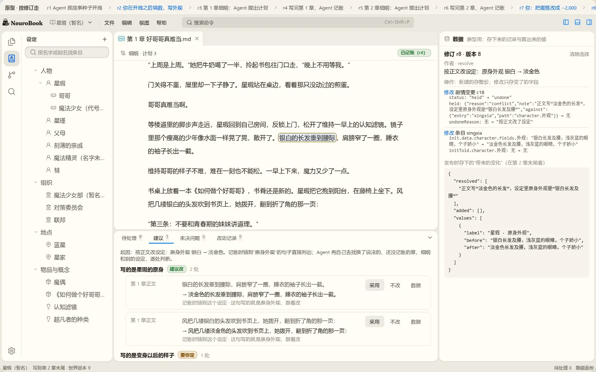
p11 你的改动的回执
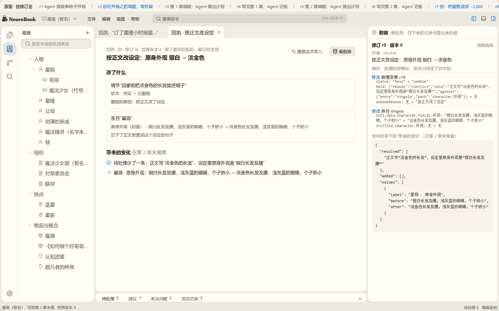
看完数据长什么样，有没有和你理解的不一样的地方？ 待定
选答。下面“做数据结构时发现的”第 3、6、11 条会改到已接受提案里的说法，我在会话里另外问。
这一轮做了什么 说明
开发者 11-02：第 1 轮只能看到界面，看不到数据长什么样，要给静态稿设计数据结构，让它没那么静态。于是把草稿改成了一个可以操作的原型：
- 类型（r2/model.ts）：内核要存的数据结构，注释对照提案。
- 引擎：一组纯函数。发布修订（存改前改后、版本加一）；按位置折叠出状态与来历；比较核对点、找嫌疑区间；算待处理、回执；按字段找还原的依赖、做补偿修订；渲染主 MDX（给作者、给 Agent 的带值写法）；改设定后找旧写法。
- 样本：星瑕的世界不是写死的，是六次修订一步步搭出来的：Agent 按种子开局 → 你填数、写外观 → Agent 从第 1 章细纲提计划 → Agent 记第 1 章的账 → 从第 2 章细纲提计划 → 记第 2 章的账。之后是你在界面上做的事，同样是修订。
- 界面：所有界面都从这些修订重放出来的世界算出来。顶上的步骤条点哪一步就退回到哪一步；右栏换成“数据”，选中什么就显示它存下来的原始记录，选中一个值就显示它的来历，选中一次修订就显示它改了哪些字段（改前 → 改后）；条目页开着时，下面还有主 MDX 的源文和给 Agent 的渲染。
- 能点的：条目树、看的位置与“按计划”、点值看来历、流水和嫌疑区间里的“改这一笔”、变更详情里改数（保存前有预览）、与设定冲突的三种处理、建议的采用与不改、改动记录的还原（有依赖时列出来）。在 Lab 里打开组件
WorldEngineDraft就能玩，场景 p01 到 p10 是下面十张图的起点；要开着草稿 worktree 的开发服务。 - 走完这一周以后的整个世界：r2/world.json（正文省略）。
只存六种东西 说明
回答 11-02 “同类有点多、架构有点乱”：存下来的只有六种，其余都是算出来的视图。
| 存下来的 | 是什么 | 样本里的例子 |
|---|---|---|
| 条目 | 身份（id、类型、挂在哪、身份同一、出场）加初值：名字、一句话、主 MDX 的块、各 Component 的数据；初值里的数带依据 | 星瑕、哥哥（马甲，挂在星瑕下面，sameAs: xingxia） |
| 剧情变更 | 一件事，也就是一条情节；计划是还没写的情节。带位置、讲述、涉及、剧情线、连接、补丁、生效状态 | c15 订蛋糕；pl8 用钱说话（计划）；c18 淡金色的头发（待定，报冲突） |
| 核对点 | 正文写明的一个数，有自己的位置 | k2：第 2 章“余额 19,800” |
| 未决问题 | 作者没想好的事，挂在任何对象上，带“正文里可能的答案” | q1 双王（挂在前史“城市大灾难”上） |
| 正文建议 | 改设定以后的旧写法，Agent 判断过 | s1 第 1 章“银白的长发垂到腰际” |
| 修订 | 一次写入：谁、做什么、一组操作（每个对象改前改后） | r6 第 2 章记账（8 个对象）；r7 你改蛋糕（1 个对象） |
| 算出来的（不存） | 怎么算 |
|---|---|
| 某个位置上的状态 | 初值，按位置与排序键打上之前所有生效的已写变更的补丁；“按计划”再加上排到这里的未兑现计划 |
| 来历 | 折叠时记下每个字段被哪几条记录依次改成什么，核对点对没对上 |
| 待处理 | 写到的位置上重算出的诊断（核对点对不上、补丁套不上），加上待定的变更；前面修好了就自己消失 |
| 计划进展 | 有生效的已写变更兑现它，就是已兑现 |
| 回执 | 一次修订的详情：从它的操作里看出新建了什么、兑现了什么、哪些数是估的；计划与正文的差额现算 |
一条情节存下来的样子（处理过以后的 c15），和它对照的核对点：
{"id": "c15", "kind": "written", "text": "订了星瑾小时候最喜欢的那家店的草莓蛋糕，写了“给星瑾”",
"at": {"kind": "chapter", "chapter": "ch2", "key": 20},
"told": [{"source": "chapter", "chapter": "ch2", "quote": "她订了一个草莓蛋糕，店员问要不要写字，她想了半天，写了“给星瑾”。"}],
"involves": ["xingxia", "xingjin"], "lines": ["line-brother"], "links": [{"kind": "fulfills", "plan": "pl8"}],
"patches": [{"op": "add", "at": {"entry": "xingxia", "path": "panel.存款"}, "value": -2000, "basis": {"kind": "derived", "check": "k2"}}],
"status": "active", "by": {"kind": "agent", "session": "写作助手 · 星瑕"}}
{"id": "k2", "at": {"entry": "xingxia", "path": "panel.存款"}, "value": 19800,
"told": {"source": "chapter", "chapter": "ch2", "quote": "星瑕坐在餐桌边，手机亮了一下，是消费提醒：余额 19,800。"},
"place": {"kind": "chapter", "chapter": "ch2", "key": 50}}
做数据结构时发现的 说明
| # | 发现 | 原型里怎么做的 |
|---|---|---|
| 1 | 同类概念收拢成六种。回执就是修订的详情；待处理是诊断加待定的变更；开局审阅、记账回执都是回执。 | 见上表 |
| 2 | “与设定冲突”不用新对象。它就是一条待定的剧情变更，补丁是“按正文的那个值”，记着跟哪个字段冲突。三种处理各是一次修订：按正文改设定 = 撤销这条、改设定；是剧情里的变化 = 让它生效；按设定改正文 = 撤销这条、给一条正文建议。 | c18；图 8 右栏是“按正文改设定”那次修订的改前改后 |
| 3 | 初值不是“开局”。前史夹在初值与第 1 章之间：星瑕的初值是男生，前史里性转、变身、回家。第 1 轮把初值叫“开局”是错的，读位置要分“初值”和“第 1 章开头”。 | 位置选择里有“初值”与各章开头、末尾；图 7 是“现在的样子”从初值一路改到第 2 章 |
| 4 | 初值里的数也要有依据。提案只给补丁标依据。存款的初值是按第 1 章正文定的（估计），魔力是你填的，Agent 开局写的来自种子。 | 条目上加 initBasis |
| 5 | 未知的数不能加减。如果存款一直是未知，第 2 章的 −20,000 会“套不上”，整条情节在那里不算数。所以缺口 1 那条“第一次在正文里出现的数定成初值”不是可选的，是必须的。 | 引擎对未知做加减时报“套不上” |
| 6 | 修订存整份对象太占地方。提案说存“每个被改对象的改前与改后”。走完这一周，记录本身 26 KB，修订已经 48 KB：星瑕这个条目 2 KB，改了 4 次，修订里存了 13 KB 的副本。书长了以后，主 MDX 长的条目每改一个字段就整份复制一次。还原与依赖本来就按字段算。 | 原型照提案存整份，界面上按字段显示差异。建议改成只存变了的字段 |
| 7 | 计划与正文的差额不用存。计划写 −10,000，正文两笔合计 −20,300，回执现算出来。 | 图 3 回执的“计划”一节 |
| 8 | 找旧写法要字段声明“会在正文里重述”。原身外观、性格、马甲的“这个身份的样子”有这个标记，数字没有。找的范围是正文、细纲、别的条目的这类字段；判断交给 Agent。 | 字段定义上的 retold |
| 9 | 还原的依赖按字段算是可行的。还原第 2 章的记账，找到你改蛋糕（同一条变更的同一个补丁）和改设定（同一条待定变更）两次依赖；还原你开局后填的数，只找到改外观那次。 | 图 9 |
| 11 | 你的改动也有回执，但回执里的“带来的变化”要在发布时存下来。开发者 11-02 问“作者的改动没有回执吗”：原来的回执只列新建的东西，改已有记录时几乎是空的。现在任何一次修订都有同一个回执页，多了“改了什么”（按字段，用作者的话）和“带来的变化”（修订前后在写到的位置上比：待处理少了哪些、多了哪些，碰到的值从多少变成多少）；小改动保存后先给一行提示，可以看回执或撤销。“带来的变化”要比较修订前后的世界，原型靠重放算；产品里不承诺按任意历史版本重算，所以要在发布时把它算好存进修订，它和保存前的预览是同一个计算。 | 图 6 下方的提示条；图 11 |
| 10 | 引用别的条目读到未知。主 MDX 里 {ref("brother").identity.外观} 读到未知：给作者显示“未知”，给 Agent 写成 null 加“（未知）”。 | 图 2 右栏下面的两段 |
原型从简、和提案不一样的地方：约束只查下限；“已兑现”只看有没有生效的兑现连接，不看这次套没套上；表达式只认取字段和一种比较；没有并发、没有写入校验；Agent 的判断（找旧写法后的分组）是写死的。
p01 开局的回执
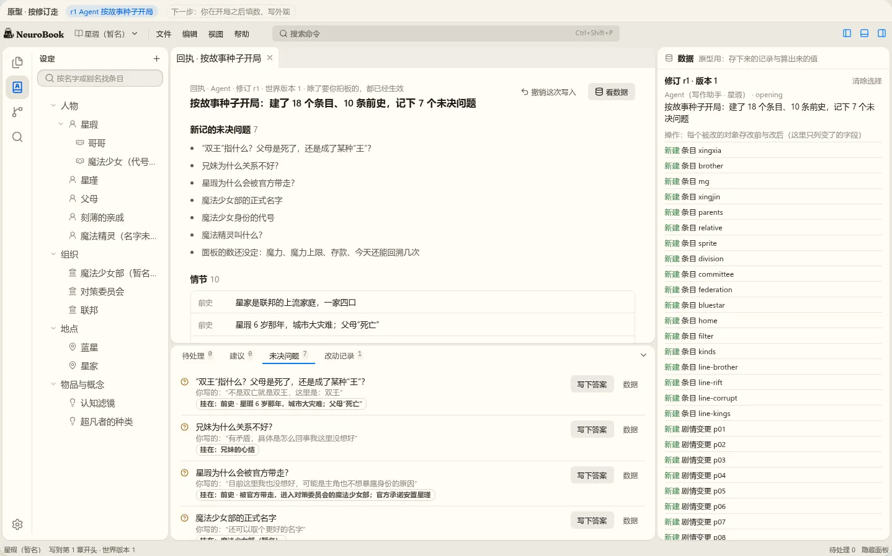
p02 星瑕，第 1 章末尾，点了魔力
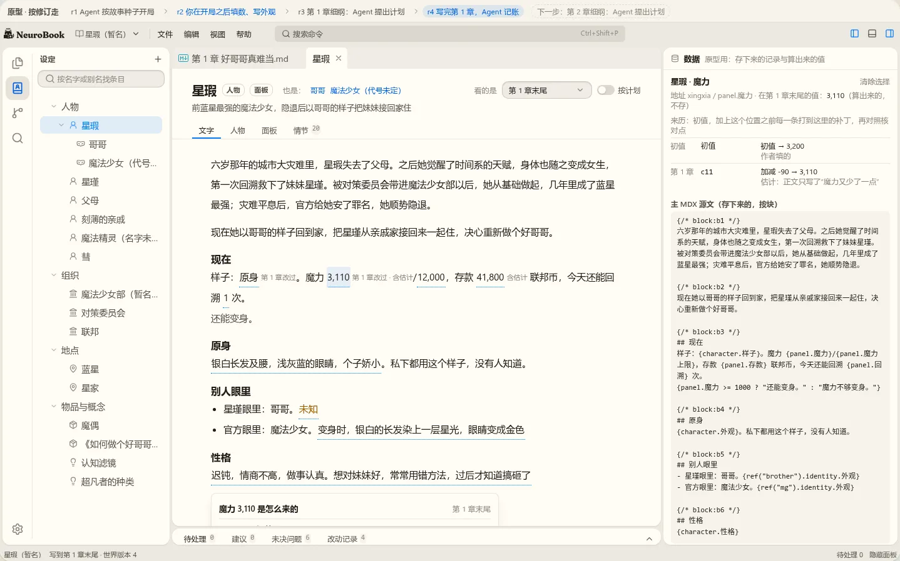
p03 第 2 章的回执
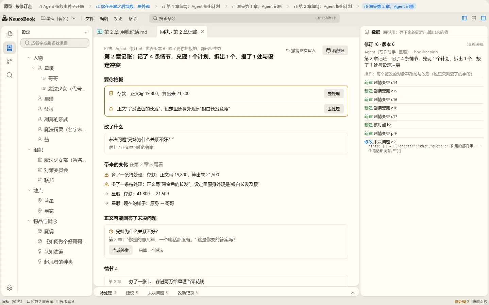
p04 待处理：存款对不上
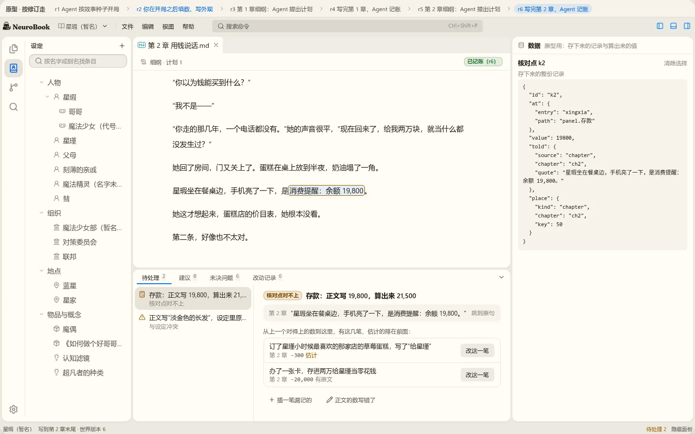
p05 变更详情：把蛋糕改成 −2,000
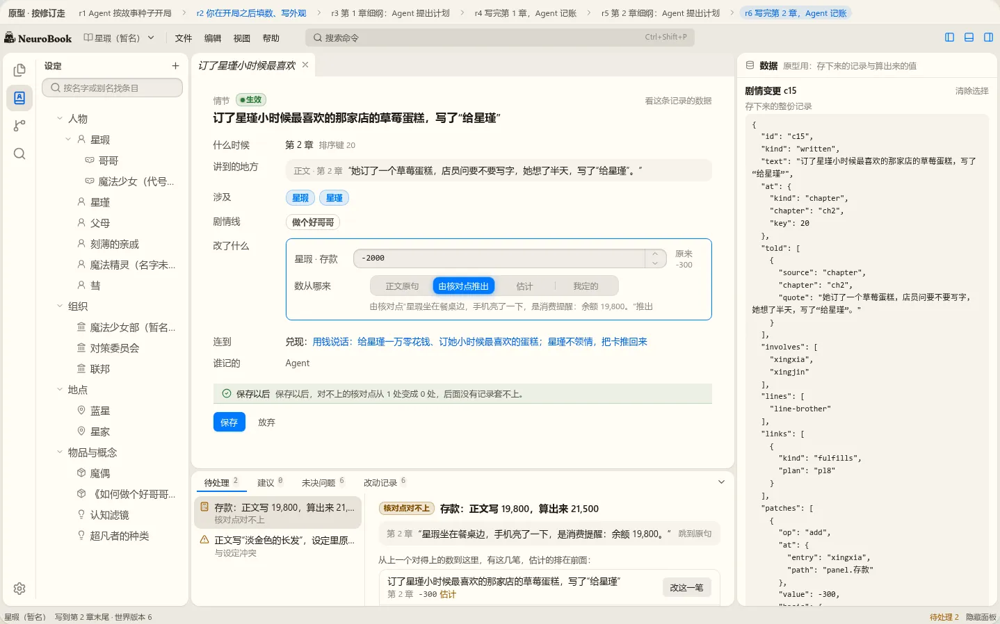
p06 保存以后：面板与流水
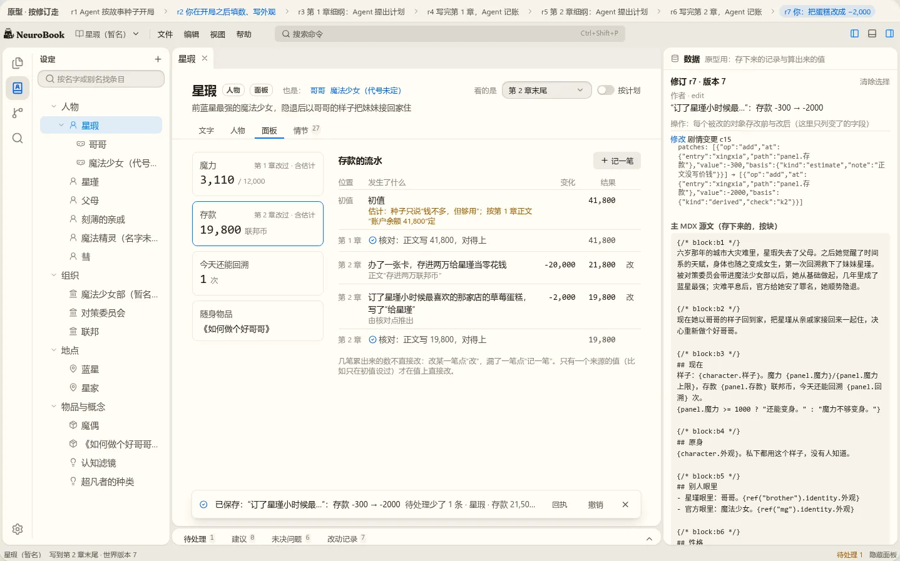
p07 “现在的样子”怎么来的
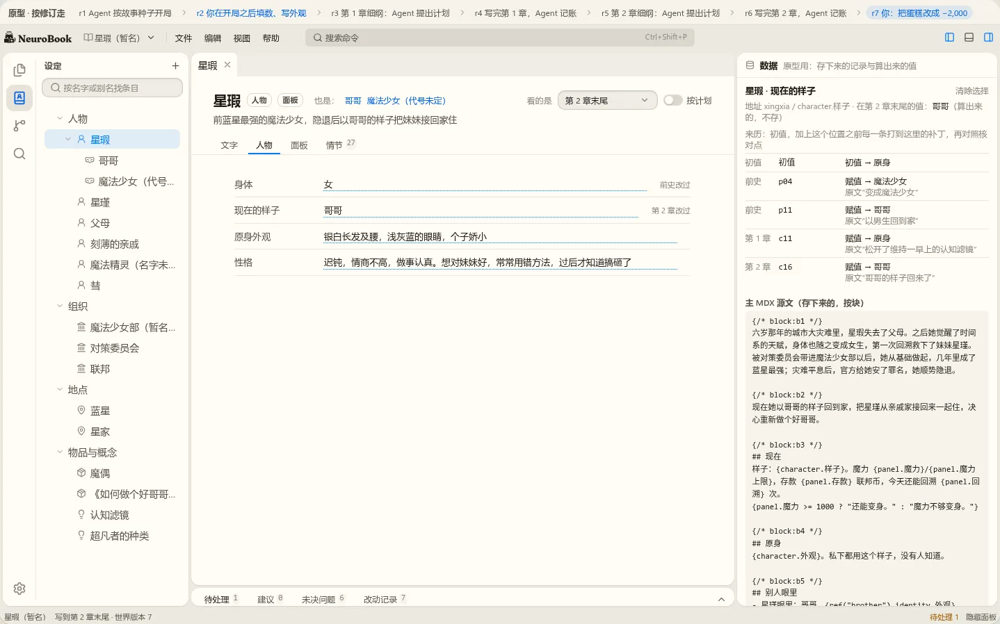
p08 头发按正文改设定以后
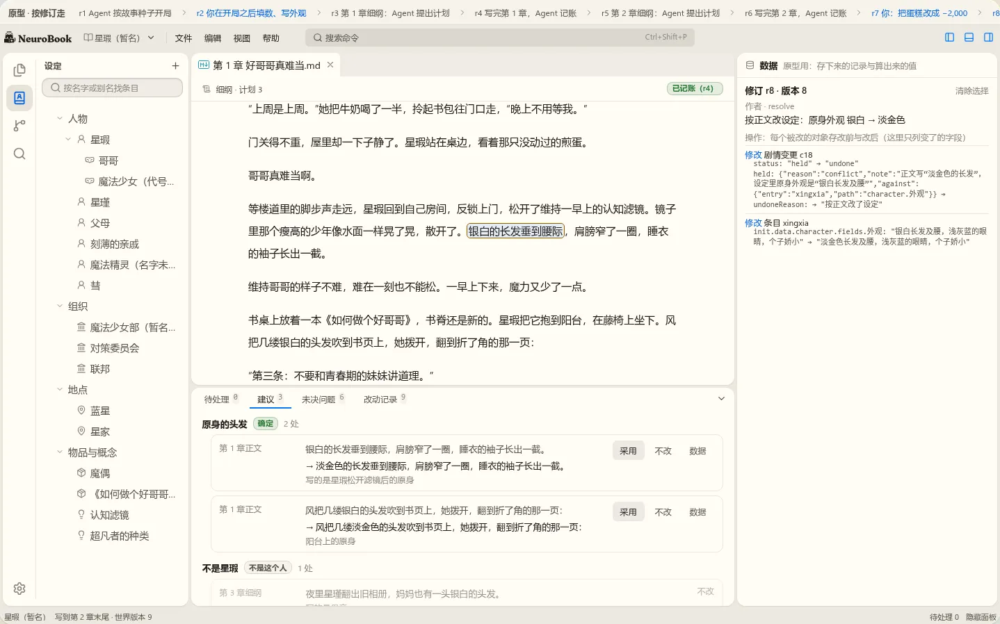
p09 还原第 2 章的记账
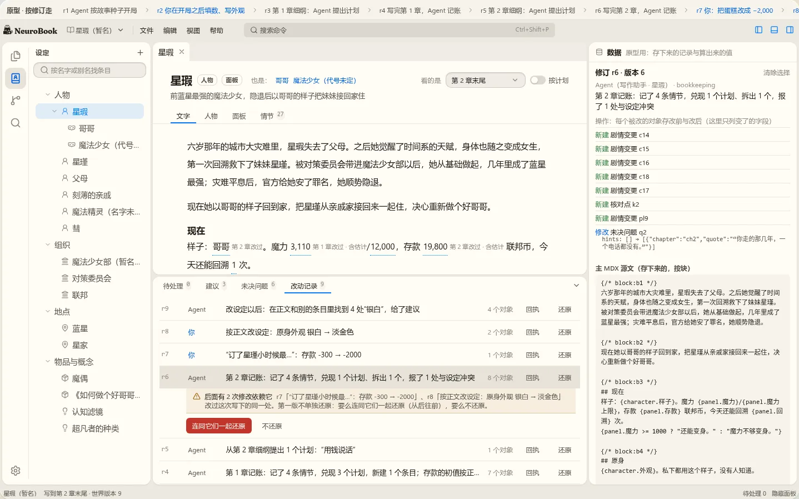
p11 你的改动也有回执
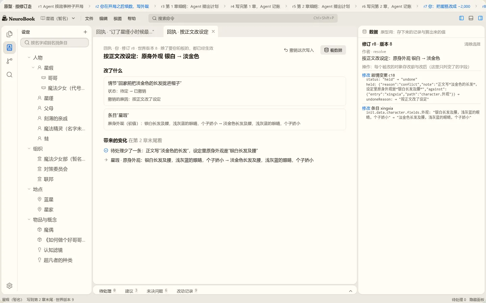
p10 剧情容器与剧情表
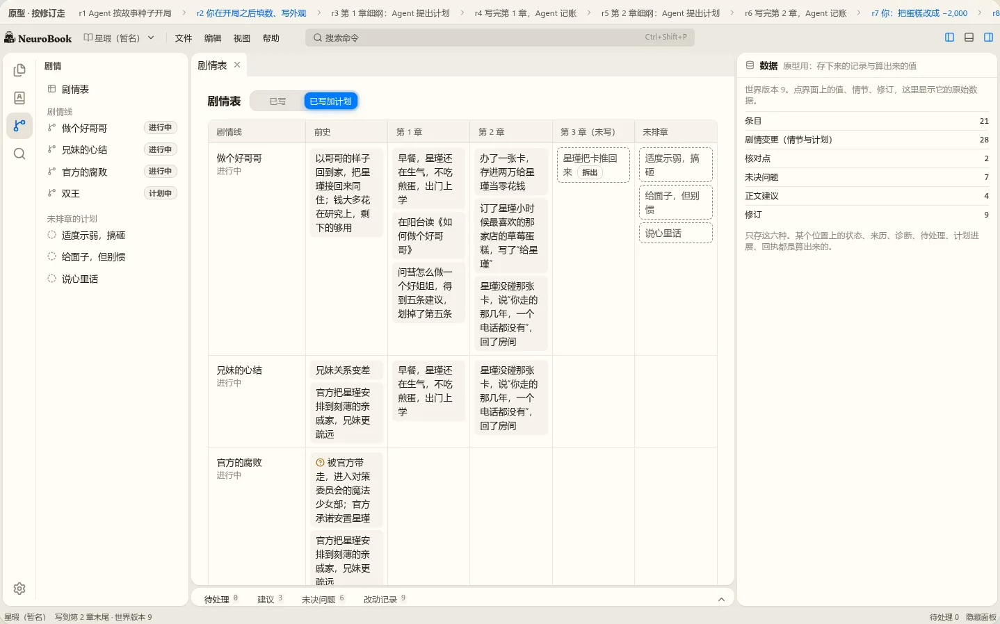
整体看下来，符合你的预期吗？ 已定
先看下面的十屏和“搭稿时发现的缺口”。哪一屏和你想的不一样、缺了什么、哪里多了，直接写；可以只写屏号加一句话。
开发者 11-02 在会话里的十条意见（记在 Task README）：回执好，回执里要看得到情节；底部面板放待处理可以；改动记录与剧情表以后打磨；剧情线不放进设定；要作者审批的东西太多、同类太多。第 2 轮按这些改了。
待处理、建议点开以后的详情放在哪 已定
待处理（第 4 屏）和建议（第 8 屏）的详情要 400px 左右才看得全，底部面板默认只有 200px。
留在底部面板，作者自己拉高
第 4、8 屏现在的画法。上面的章节滚到原句，下面是要拍板的事，两样同时看得到；面板的高度照常由作者拖，系统不替作者改尺寸。
详情进编辑器区的标签页
底部面板只放列表，点一项在编辑器区打开一个“待处理”标签页，和变更详情一样。地方够大，但正文原句就要靠拆分并排才能同时看。
提案没写到、或者照着画出来别扭的地方 说明
这些是搭稿时遇到的，草稿里先按“草稿里怎么画的”一列处理。哪些要改提案、哪些留给后续 Task，我在会话里逐条问你。
| # | 缺口 | 草稿里怎么画的 | 建议归到 |
|---|---|---|---|
| 1 | 种子开局时，数是“未知”。种子只说“钱不多，但够用”。提案只给“已有成稿”定了“第一次在正文里出现的数当初值，标估计”，没说从种子开局时怎么办，也没说“未知”在条目页、给 Agent 的文字、核对点里怎么显示。 | 开局时面板的数空着，列进未决问题；第 1 章记账遇到“账户余额 41,800”，按正文定为开局数，标估计（第 1、6 屏） | t27 内核 Spec |
| 2 | 正文可能回答了未决问题。第 2 章星瑾说“你走的那几年，一个电话都没有”，正好像“兄妹为什么关系不好”的答案。提案只说 Agent 不替作者补全，没说记账碰到可能的答案怎么办；而“角色说的不算世界的变化”。 | 回执里加一节“可能回答了一个未决问题”：当成答案、只算星瑾的一个说法、先放着（第 3 屏） | t19 写作流程 |
| 3 | 就地改紧挨着核对点时，“改设定”的三种改法都和正文冲突。第 2 章末尾刚对上“余额 19,800”，这时把存款改成 29,800，改开局数、改哪一笔，都会让正文的余额对不上，只有“补一笔”不冲突。而在第 2 章末尾，“补一笔漏记”和“这是剧情里发生的变化”是同一件事，两个入口重叠。 | 四种改法照提案列出，每种写明后果；勾选框照留（第 7 屏） | t16 作者界面；规则进 t27 |
| 4 | 未决问题挂在哪。提案写“挂在章或剧情线上”。种子里的未决问题挂在前史（双王）、剧情线（兄妹心结）、组织（部门名）、身份（代号）、面板字段（数）上。 | 挂在各自的对象上，开局审阅里列在最前，侧栏有一个入口（第 1、2 屏） | t27 |
| 5 | 细纲里讲到的过去的事。“被软禁，靠彗的魔偶逃脱”第一次出现在第 1 章大纲里。它不是计划，是已经发生的前史。提案只说 Agent 从细纲提出计划。 | 记成前史，出处写“第 1 章细纲”（第 10 屏“官方的腐败”一行） | t19；记法进 t27 |
| 6 | Agent 自己加的结构算不算替作者补全。你只说“再加一个面板”，面板的四个字段是 Agent 按面板文的常见写法建的。 | 字段建了，数空着，并把“面板的数”列成未决问题（第 1 屏） | t19 |
| 7 | “现在的样子”与马甲条目重叠。星瑕有一个“现在的样子”字段（原身、哥哥、魔法少女），又有“哥哥”“魔法少女”两个马甲条目。原身不是马甲；魔法少女变身后的外观放在马甲上还是本体上，提案没说。 | 样子是本体的字段，马甲只管社会身份；魔法少女的外观写在马甲的文字里，所以改设定时它被列为“请你判断”（第 8 屏） | t10 字段清单 |
| 8 | 工具名撞名。提案的 read、write 和 harness 自带的读写文件工具同名。 | 对话里写成 world_lookup、world_read、world_write（第 1、2 屏右栏） | t20 |
| 9 | 详情放不进默认高度的底部面板。 | 见上面的待定题 | t16 |
故事线 说明
- 你把故事种子发给 Agent，看开局审阅。
- 写第 1 章、记账，然后打开星瑕看看。
- 写第 2 章“用钱说话”，记账，回执里有两处要你拍板。
- 处理“存款对不上”：发现是蛋糕的价钱估错了。
- 在变更详情里把蛋糕改成 −2,000。
- 看星瑕的面板和存款的流水。
- （假设）你直接把存款改成 29,800，看确认条。
- 处理“头发与设定不同”：你选按正文改设定，看正文修改建议。
- 打开改动记录，想撤销第 2 章的记账。
- 看剧情表。
1 开局审阅：交了故事种子以后
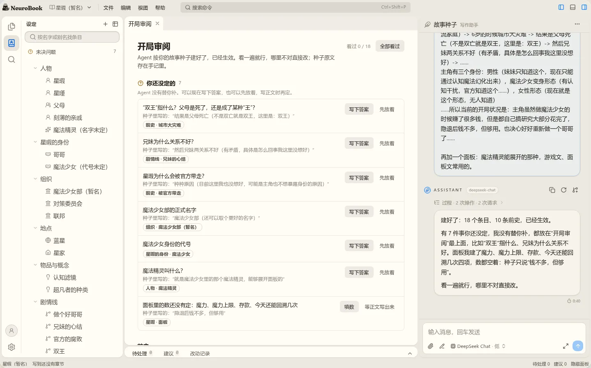
你把种子（加“再加一个面板”）发给 Agent。开局的时间点种子里写清楚了，没有挡住开局的问题，Agent 直接建了 18 个条目、10 条前史，已经生效。它的两次写入（先预览、再发布）收在对话的“过程”里。
开局审阅是“看过”，不是“批准”：你还没定的 7 件事排最前，每件附上种子原文，可以写下答案或先放着；后面是前史时间线和按类型列的条目。“看过 0 / 18”只是进度，不看也不影响写。
2 条目页：星瑕，第 1 章末尾
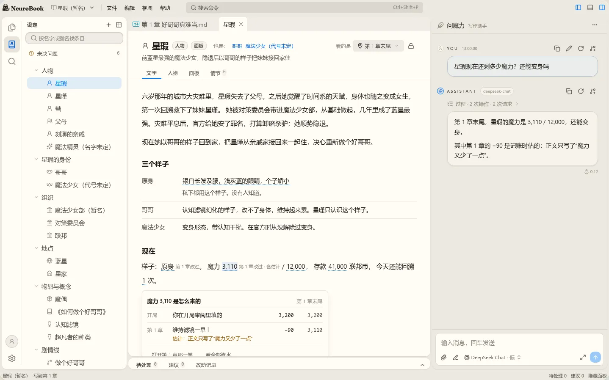
顶上：名字、类型、“也是：哥哥、魔法少女（代号未定）”，右边是看的位置（默认跟着你正在写的章）和锁。下面是主 MDX 渲染出来的文字，值直接嵌在句子里：虚线下划线表示这是一个可以改的值，悬停显示中文字段名；“第 1 章改过”“含估计”是淡色小字。点了魔力，来历展开：开局 3,200（你在开局审阅里填的），第 1 章 −90（估计，正文只写了“魔力又少了一点”）。
人物、面板、情节在各自的 Tab 里，不和文字挤在一起。右栏 Agent 读到的是带值写法：
现在的样子：{character.形态 = "原身"}（显示名：现在的样子）
魔力 {panel.魔力 = 3110}/{panel.魔力上限 = 12000}，存款 {panel.存款 = 41800}
今天还能回溯 {panel.回溯次数 = 1} 次（显示名：今天还能回溯）
{panel.魔力 >= 1000 ? "还能变身。" : "魔力不够变身。" -> "还能变身。"}
3 第 2 章的记账回执
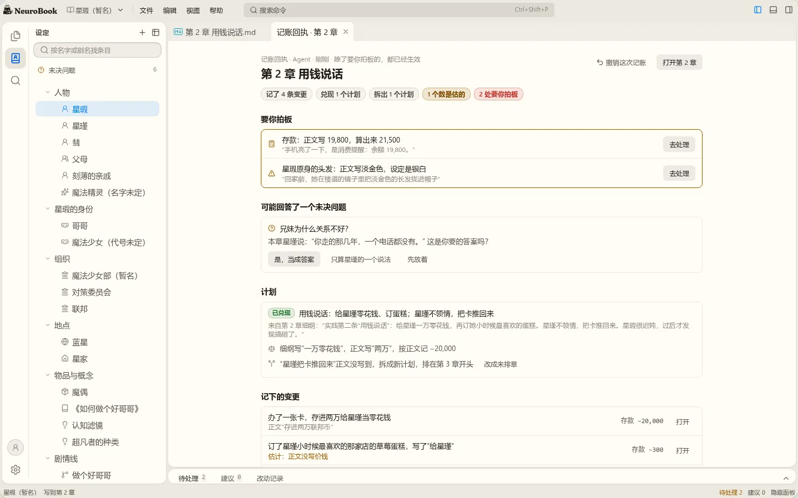
从上往下：要你拍板的两项；一处“可能回答了未决问题”（缺口 2）；计划已兑现，细纲写“一万零花钱”、正文写“两万”，按正文记，没写到的“星瑾把卡推回来”拆成第 3 章开头的新计划；记下的四条变更，蛋糕的 −300 是估的；最后是没有建条目的（街角的蛋糕店没有名字）。除了要你拍板的，都已经生效；整次记账可以一键撤销。
4 待处理：存款对不上
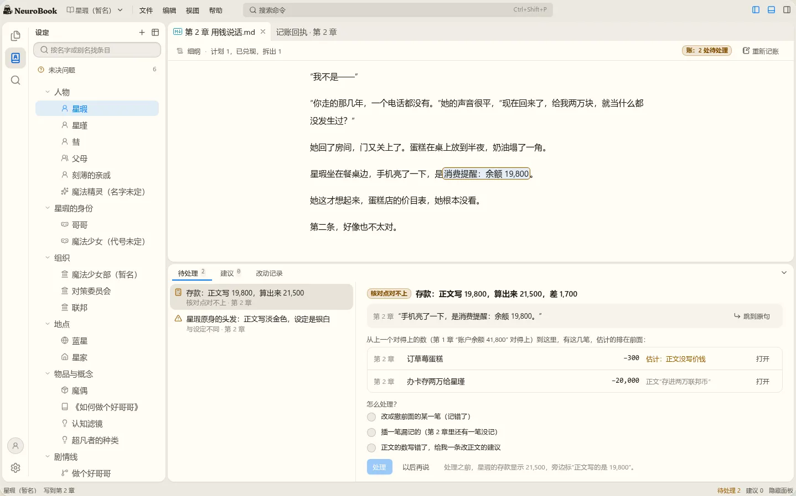
正文写余额 19,800，算出来 21,500。从上一个对得上的数（第 1 章“账户余额 41,800”）到这里只有两笔，估计的蛋糕排在前面。处理办法照提案不预选。
5 变更详情：订草莓蛋糕
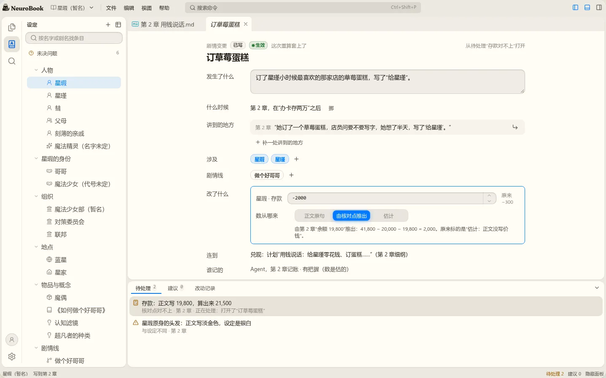
一条剧情变更的全部内容都在这里改：发生了什么、什么时候、讲到的地方、涉及、剧情线、改了什么、连到哪个计划、谁记的。把 −300 改成 −2,000，“数从哪来”从“估计”换成“由核对点推出”，系统写出算式；保存前的预览说待处理会消失、后面没有别的记录受影响。
6 面板：存款的流水
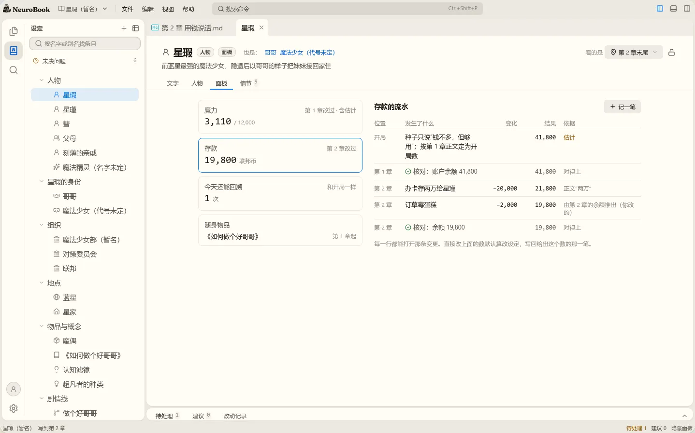
左边是面板的当前值，右边是选中的存款的流水：开局数按第 1 章正文定（估计，缺口 1），两次核对都对得上。每一行都能打开那条变更；“记一笔”落在当前位置（第 2 章末尾）。
7 就地改存款：确认条
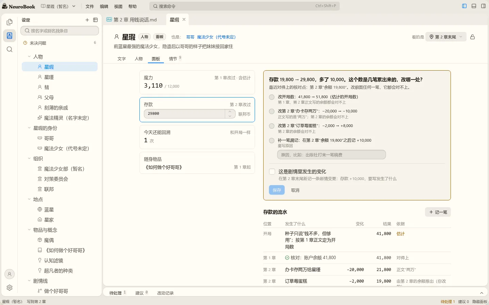
存款是几笔累出来的，所以要你选改哪一处，不预选。每种改法写明后果：前三种都会让刚对上的“余额 19,800”对不上（缺口 3）。“这是剧情里发生的变化”的勾选框在这里和第四种改法是同一件事。
8 改设定以后：正文修改建议
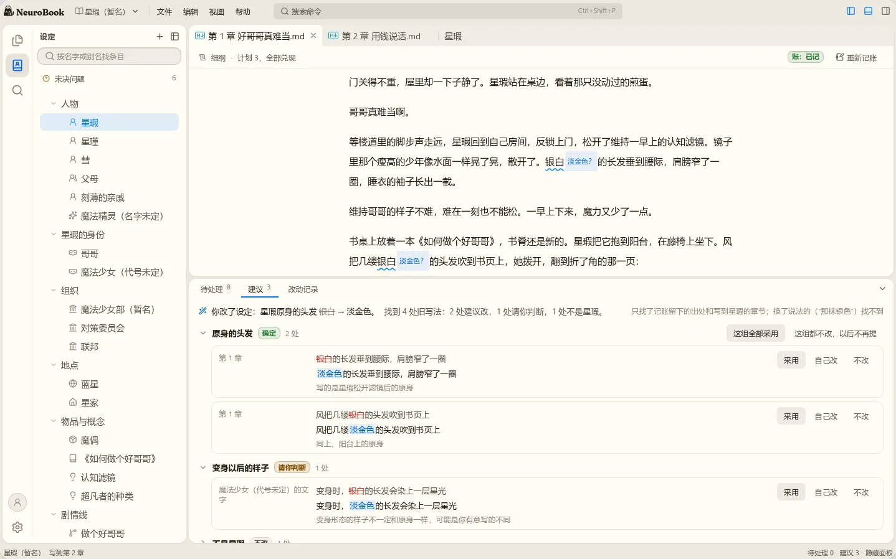
处理“头发与设定不同”时，你选按正文改设定：原身外观的“银白”改成“淡金色”，写回开局设定。系统去找旧写法：第 1 章两处写的是原身，建议改；魔法少女身份的文字里有一处，变身后的样子可以和原身不同，请你判断（缺口 7）；第 3 章细纲里那处写的是母亲，不改。只给建议，不自动改正文；一组可以一起采用，也可以“都不改，以后不再提”。
9 改动记录：撤销第 2 章的记账
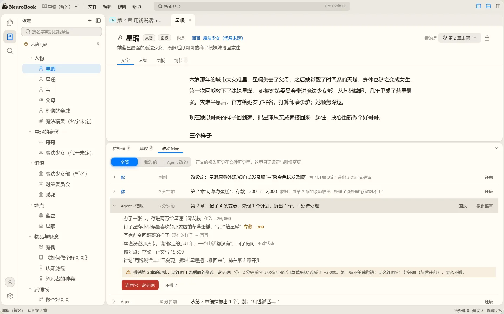
所有修订按时间排，新的在上；每条写谁、什么时候、改了什么，可以还原。你想撤销第 2 章的记账，但后面你把蛋糕改成 −2,000 依赖它：第一版不单独撤，要么连同那条一起还原（从后往前），要么不撤。正文本身的修改历史不在这里，在文件历史里。
10 剧情表
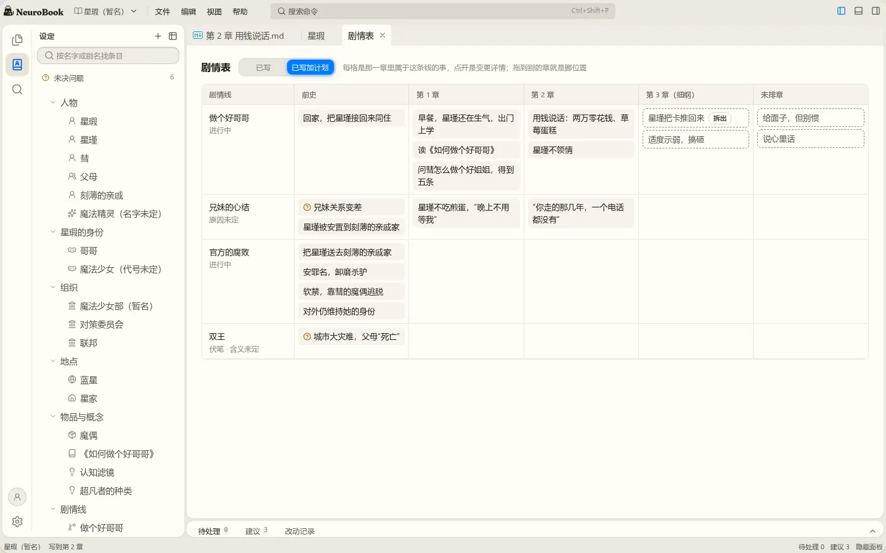
剧情线乘章。实底是已写的事，虚线框是计划，问号是挂着未决问题的。第 3 章的“星瑾把卡推回来”是第 2 章拆出来的；“官方的腐败”的前史里有一条出处是第 1 章细纲（缺口 5）。
新应用里还没有任何设定界面，外框之外都是新画的。旧应用的设定是文件夹加详情面板（packages/neuro-book-legacy/app/components/novel-ide/workspace/WorkspaceLorebookDetailPanel.vue），剧情工作台见归档文档站的截图（docs/archived/vitepress/public/images/剧情工作台.jpg）；两者的模型都已被提案取代，这一轮没有沿用它们的版式。